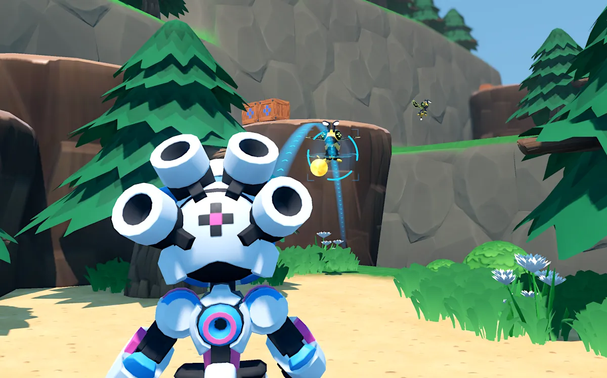

Task Chosen
The task removes the grenade weapon from RoboBlast and asks the rollout agent to rebuild it from a behavioral-only prompt. The expected player-facing behavior spans weapon switching, HUD state, trajectory preview, physical projectile flight, localized explosion damage, visual/audio feedback, cleanup, and preservation of default shooting/melee.
The feature is a good benchmark slice because it crosses code, scenes, resources, UI, physics, damage conventions, and visual presentation. It is also hard to grade honestly: a solution can look plausible while skipping aim reactivity, spatial damage, cooldown behavior, or main-scene integration.
TASK_PROMPT.md. It intentionally describes outcomes only: no historical file names, node paths, class names, methods, or verifier internals.

Verifier Design
The verifier is external to the candidate project. It copies the candidate into a temporary directory, injects verifier_godot/__verifier__, runs Godot headlessly, and writes a structured 0-100 JSON result.
Scoring is category-based so near-misses receive useful partial credit instead of a single pass/fail result. The current rubric is:
| Category | Max | Behavior checked |
|---|---|---|
| Weapon controls | 15 | Switching, grenade attack path, rate limit, default attack preservation. |
| HUD feedback | 10 | Visible weapon UI, selected state update, aim feedback. |
| Trajectory preview | 30 | Visible aiming aid, arc/landing communication, camera reactivity, projectile consistency, lifecycle. |
| Projectile physics | 15 | Runtime projectile spawn, arcing motion, player-safe path. |
| Explosion gameplay | 20 | Seeded nearby damage, far/side/rear safety, player safety, effects, throw-distance calibration. |
| Visual/audio polish | 5 | Visible temporary effects, detonation audio, cleanup. |
| Stability repeatability | 5 | Repeated throws, default-weapon regression checks, main-scene smoke checks. |
Calibration And Scores
These numbers are from local Godot 4.6 verifier runs on 2026-07-03. The fresh ablated score was rerun for this writeup; the reference and Sonnet runs use the latest recheck-20260703-* score artifacts already present in this verifier workspace.
| Candidate | Score | Observed | Evidence path |
|---|---|---|---|
| Reference complete implementation | 93/100 | artifacts/recheck-20260703-reference-main-complete-score.json |
|
| Ablated task workspace | 13/100 | artifacts/writeup-ablated-score.json |
|
| Claude Code Sonnet run 1 | 47/100 | artifacts/recheck-20260703-sonnet-1-score.json |
|
| Claude Code Sonnet run 2 | 78/100 | artifacts/recheck-20260703-sonnet-2-score.json |
|
| Claude Code Sonnet run 3 | 12/100 | artifacts/recheck-20260703-sonnet-3-score.json |
|
| Fake broad/global damage probe | 90/100 | artifacts/writeup-probe-global-damage-score.json |
probe_matrix.md, but it scored 90. The verifier does notice far, side, and rear safety damage, yet the penalty is too small. Final submission should strengthen explosion safety gating or cap total score when distant targets are damaged.
Rollout Runs
@coding-solo/godot-mcp through Node and points GODOT_PATH at C:\Godot_v4.6.
| Run | Diff summary | Score | Failure analysis |
|---|---|---|---|
| Sonnet 1 | 6 modified, 6 added, 1 prompt-localized file removed. Added thrown_grenade and trajectory resources; modified player, weapon UI, project settings, and explosion scene. |
47/100 | Real defects: weapon switch path did not create observable projectile behavior; HUD state did not change; preview did not react to aim; no visible effect/audio in the primary observation window. The explosion trial still found localized damage, so the category breakdown is useful but should be manually inspected. |
| Sonnet 2 | 5 modified, 5 added, 1 prompt-localized file removed. Added grenade_projectile, projectile scene, landing marker, and a grenade implementation plan. |
78/100 | Best partial run. It implemented switchable grenade attacks, projectile physics, localized damage, visual/audio feedback, and repeat use. Misses were meaningful: no registered weapon-switch input action, preview did not update with aim/camera direction, default throw landed at 13.20 units outside the preferred 6-12 band, and one main-scene default attack smoke check was not observed. |
| Sonnet 3 | 0 code/resource changes relative to the ablated baseline; removed the localized task prompt file. | 12/100 | Real agent failure: no grenade trajectory, projectile, explosion gameplay, or polish behavior was implemented. The remaining points come from existing UI/default-player behavior that survived the ablation. |
Before publishing the fork, attach exact model/version strings and full patch files for each run. The current verifier repo contains score artifacts and isolated workspace paths, but not committed public branch diffs for these three runs.
Anti-Cheat Status
Probes Designed
HUD only visual only no trajectory single-use player damage wrong trajectory global damage default regressionThe expected bands live in probe_matrix.md.
Probe Actually Run
global damage scored 90
The verifier logs far, side, and rear safety target damage but only subtracts 4 points inside explosion_gameplay. That leaves the fake solution above the pass threshold.
Required Fix
Make distant-target damage a stronger anti-cheat condition. Options include capping explosion_gameplay, capping total score when broad damage is observed, or splitting safety target checks into larger point weights. Then rerun the whole probe matrix.
Evaluation Integrity
| Risk | Mitigation | Current status |
|---|---|---|
| Agent reads verifier or hidden rubric | prepare_rollout_workspace.py excludes verifier folders, generated artifacts, assignment/verifier docs, Godot caches, local agent config, and git history. |
Implemented |
| Agent recovers original grenade from git history | Rollout copy should be non-git or history-stripped. Public branches should keep the ablated task separate from verifier and reference evidence. | Local copies were isolated |
| Verifier overfits one coordinate setup | Explosion trials use fixed seeded headings and nearby/safety target placements. Same verifier version is deterministic while still testing multiple angles. | Implemented |
| Verifier accepts reward hacking | Probe matrix exists, but the global damage fake currently passes and must be fixed. | Blocking |
Reproduction Commands
Verifier command used for the fresh ablated check:
Fake broad-damage probe command:
Godot version recorded in result JSON: 4.6-stable (official). The README also records the local executable build as 4.6.stable.official.89cea1439.
Final Submission Checklist
| Item | Status | Next action |
|---|---|---|
| Ablated task branch and behavioral spec | Ready locally | Publish exact ablated branch and keep verifier/history out of agent reach. |
| Headless verifier and scoring docs | Ready locally | Include exact command and Godot 4.6 version. |
| At least 3 Claude Code runs | Scored | Commit or publish each final diff/branch and exact model/tool metadata. |
| Godot MCP available to rollout agents | Configured locally | Document the MCP config in the public run metadata. |
| Anti-cheat fake solutions | Not ready | Fix the global-damage miss, then run and record all fake solutions from probe_matrix.md. |
| HTML writeup with visuals | This page | After anti-cheat fix, update the blocker section and score table with final probe evidence. |